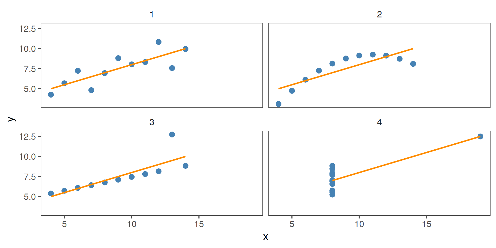
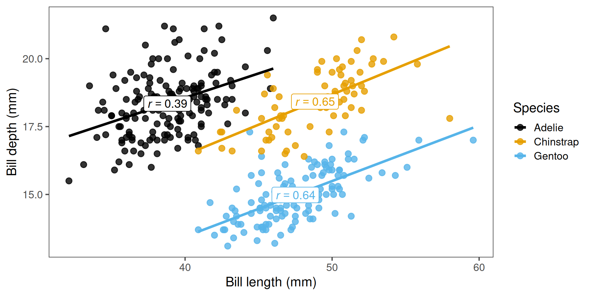
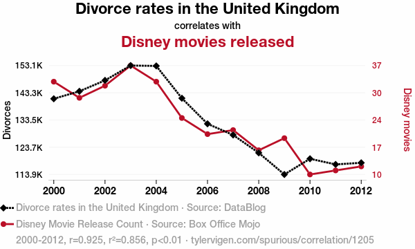

The correlation coefficient r is 0.64, indicating a positive correlation.
Statistical significance for correlations
To test whether the observed r could arise by chance, use a correlation test.
cor.test(x = Gentoo$bill_length_mm, y = Gentoo$bill_depth_mm,use ="complete.obs"# Ignore NAs)
Pearson's product-moment correlation
data: Gentoo$bill_length_mm and Gentoo$bill_depth_mm
t = 9.2447, df = 121, p-value = 1.016e-15
alternative hypothesis: true correlation is not equal to 0
95 percent confidence interval:
0.5262952 0.7365271
sample estimates:
cor
0.6433839
There is a significant correlation between bill length and depth for Gentoo penguins (Pearson correlation: \(r=0.64\), \(t_{121} = 9.24\), \(p=1\times10^{-15}\)).
Assumptions
Pearson’s correlation assumes:
Both variables are continuous
Relationship is linear
Data are approximately normally distributed
No major outliers
All four of these plots have r = 0.816, but show different data:

Comparing across groups
Perhaps we want to know if the strength of the correlation differs between species. We can do this using group_by(species) and summarise() from the tidyverse, just like we did previously for means:
penguins |>group_by(species) |>summarise(r =cor(x = bill_length_mm, y = bill_depth_mm,use ="complete.obs")) # Ignore NAs
# A tibble: 3 × 2
species r
<fct> <dbl>
1 Adelie 0.391
2 Chinstrap 0.654
3 Gentoo 0.643
Here, Adélie penguins have the lowest correlation between bill length and depth.
Visualising correlations
It’s important to check whether it is reasonable to assume linearity

Rank correlations
When data are not normally distributed, contain outliers, or the relationship is non-linear, we can use a rank-based correlation instead of Pearson’s.
Two common types:
Spearman’s ρ (rho):
X and Y are converted to ranks (i.e. ordered from smallest to largest)
A correlation between the ranks of X and Y is performed
Good for non-linear associations with moderate sample size
Spearman's rank correlation rho
data: Gentoo$bill_length_mm and Gentoo$bill_depth_mm
S = 113069, p-value = 2.919e-15
alternative hypothesis: true rho is not equal to 0
sample estimates:
rho
0.6354081
Rank correlations
When data are not normally distributed, contain outliers, or the relationship is non-linear, we can use a rank-based correlation instead of Pearson’s.
Two common types:
Kendall’s τ (tau):
Each X and Y observation is paired to every other X and Y observation
If X and Y change in the same direction for each pair, τ increases
More robust than Spearman’s for small samples and outliers
Kendall’s τ will almost always be smaller than Spearman’s ρ
Kendall's rank correlation tau
data: Gentoo$bill_length_mm and Gentoo$bill_depth_mm
z = 7.5905, p-value = 3.188e-14
alternative hypothesis: true tau is not equal to 0
sample estimates:
tau
0.4712505
Summary of key functions in R
Task
Function
Example
Calculate correlation
cor(x, y)
Simple estimate
Test correlation
cor.test(x, y)
Includes p-value
Groupwise correlation
group_by() + summarise(cor())
Compare groups
Non-parametric version
method = "spearman"
Rank-based test
Correlation and the coefficient of determination (R2)
The correlation coefficient (r) measures the strength and direction of a linear relationship.
The coefficient of determination (R2) tells us how much of the variation in one variable is explained by the other.
Relationship between them (for simple linear relationships): \[ R^2 = r \times r = r^2 \]
# Compute r and R² for penguins datar <-cor(x = Gentoo$bill_length_mm,y = Gentoo$bill_depth_mm,use ="complete.obs")# Correlation coefficient rr
[1] 0.6433839
# Coefficient of determination, R2r^2
[1] 0.4139429
For R2, we would report this as: Variation in bill length predicts 41% of the variation in bill depth (R2 = 0.41).
A note on correlation vs. causation
Correlation does not necessarily equal causation. Even if two variables change together, one may not cause the other.
Examples:
Ice cream sales and shark attacks (both increase with temperature)
Human height and vocabulary size (both increase with age in children)
Number of storks and human births (classic spurious correlation)
Correlations can arise due to:
Confounding variables (a third variable influencing both)
Coincidence, especially with small or selective datasets
Indirect relationships, where one variable affects another through an intermediate
We need experiments, controls, or mechanistic understanding to establish causation.
A note on correlation vs. causation

Correlation \(r = 0.925\), \(r^2 = 0.86\). Plot by Tyler Vigen, licensed under CC BY 4.0.
Recap & next steps
Correlation quantifies linear association between two continuous variables
Visualise first — avoid being misled by non-linear patterns or outliers
Use Pearson for approximately linear data, Spearman/Kendal otherwise
Correlation ≠ causation — interpret biologically
You are now ready for the workshop covering hypothesis testing, classical statistical tests, and correlation.